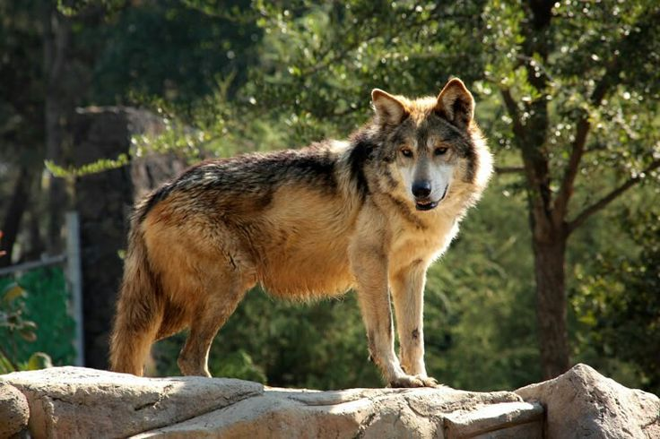
Lobo mexicano
Hábitat: Habita los bosques templados y pastizales desde el suroeste de EE. UU. hasta el Eje Neovolcánico Transversal de México.
Alimentacion: Come venados y pecaríes, conejos, guajolotes o presas igual de pequeñas.
Es una subespecie de lobo gris (C. lupus) nativa del este y sureste de Arizona y del oeste y sur de Nuevo México (en Estados Unidos)
y áreas fragmentadas del norte de México.
Datos curiosos
- Tiene pelaje café, gris y tonos amarillos.
- Antes estuvo al borde de la extinción.
- Puede correr largas distancias sin cansarse.
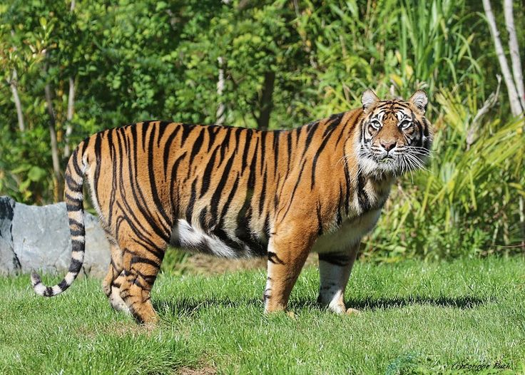
Tigre
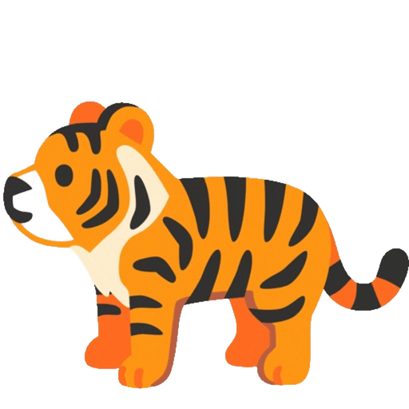
Hábitat: Puede encontrarse en selvas tropicales, bosques templados, manglares, sabanas boscosas y zonas montañosas.
Alimentacion: Ciervos, jabalíes y antílopes, búfalos, monos, aves y, ocasionalmente, presas más pequeñas si escasea el alimento.
El tigre es el felino más grande del mundo y pertenece a la especie Panthera tigris. Es un depredador carnívoro muy poderoso y territorial, reconocido
por sus características rayas negras sobre un pelaje anaranjado.
Datos curiosos
- Los tigres nadan muy bien y les gusta el agua.
- Sus rayas tambien estan en su piel y no solo el pelaje.
- Un rugido de tigre se puede escuchar a varios kilometros.
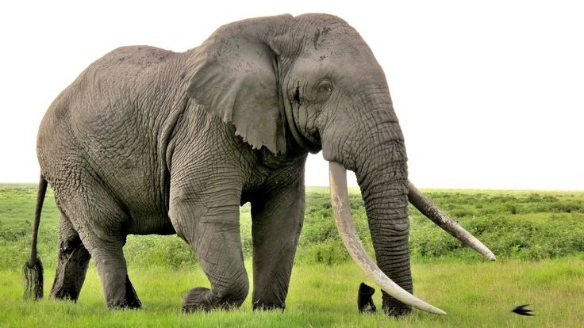
Elefante
Hábitat: Sabanas, bosques, selvas tropicales y zonas de matorrales con grandes extensiones de territorio para encontrar alimento, agua y espacio para su grupo.
Alimentacion: Pasto, hojas, ramas, frutas y cortezas de árboles.
El elefante es el mamífero terrestre más grande del mundo. Pertenece a la familia Elephantidae y se caracteriza por su trompa flexible, grandes orejas y colmillos
de marfil. Es un animal inteligente, social y con una memoria muy desarrollada.
Datos curiosos
- Sus orejas ayudan a regular su temperatura.
- Los colmillos son dientes modificados.
- Las crías pueden caminar pocas horas después de nacer.
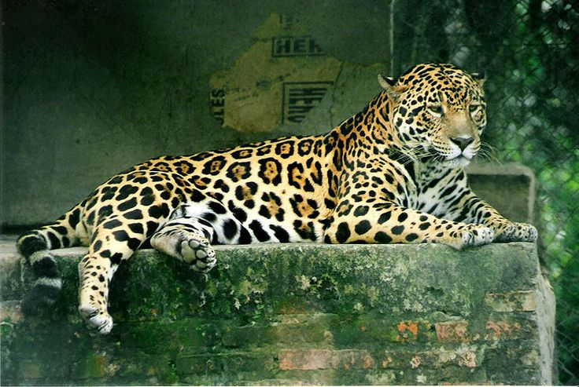
Jaguar
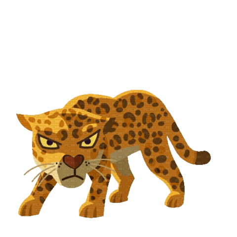
Hábitat: Selvas tropicales, bosques húmedos, manglares y zonas cercanas a ríos o lugares con vegetacion densa y agua abundante, porque es un excelente nadador.
Alimentacion: Venados, pecaríes, monos, aves, peces y reptiles. También caza tapires y capibaras.
El jaguar es el felino más grande de América y uno de los más fuertes del mundo. Pertenece a la especie Panthera onca y es reconocido por su pelaje amarillo con rosetas negras.
Es un depredador solitario que destaca por su poderoso mordisco, capaz de perforar caparazones y cráneos.
Datos curiosos
- Es el felino con la mordida más fuerte del continente americano.
- A diferencia de otros grandes felinos, disfruta nadar y cazar en el agua.
- EPuede ver muy bien de noche gracias a su visión nocturna avanzada.
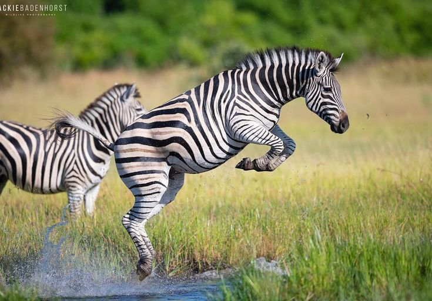
Cebra
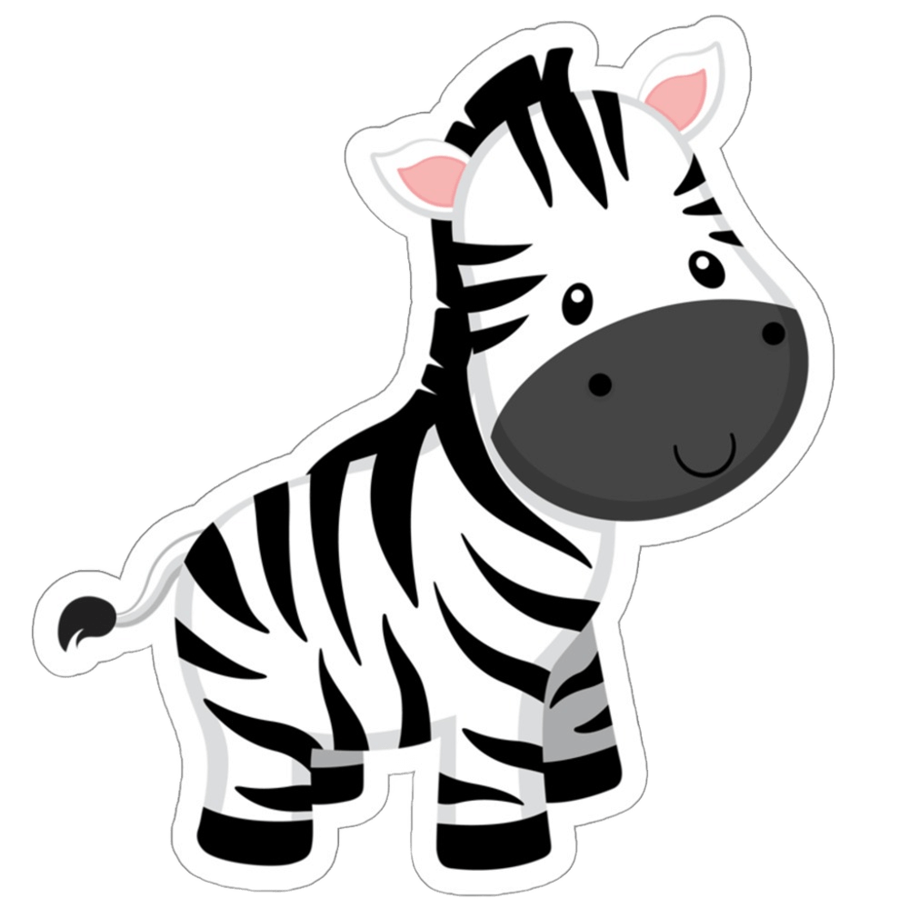
Hábitat: Vive en sabanas, pastizales abiertos y zonas semiáridas.
Alimentacion: Se alimenta sobre todo de pasto, aunque también consume hojas y tallos cuando es necesario.
Es un mamífero herbívoro africano conocido por su pelaje blanco y negro formado por rayas únicas en cada individuo. Pertenece al género Equus, el mismo de los caballos y burros.
Vive en manadas y es muy rápida para escapar de depredadores.
S
Datos curiosos
- Ninguna cebra tiene el mismo patrón de rayas.
- Pueden correr a gran velocidad durante largos tramos.
- Forman grupos sociales muy unidos y protectores.
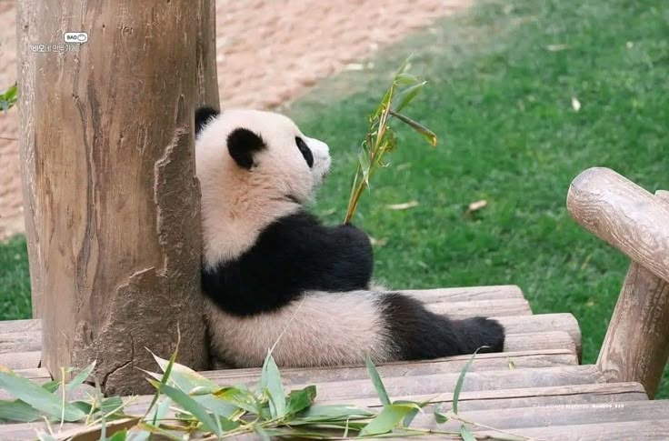
Panda
Hábitat: Vive en bosques templados y montañosos del centro y suroeste de China.
Alimentacion: Su dieta se basa en diferentes especies de bambú, aunque ocasionalmente puede comer pequeños animales o huevos.
El panda es un mamífero originario de China, conocido por su pelaje blanco y negro y su apariencia robusta. Pertenece a la familia de los osos y es un símbolo mundial de conservación.
Aunque es carnívoro por clasificación, su dieta está adaptada casi por completo al bambú.
Datos curiosos
- Un panda puede comer más de 12 kg de bambú al día.
- Sus muelas son muy fuertes, diseñadas para triturar tallos duros.
- Nacen muy pequeños y rosados, sin pelaje.
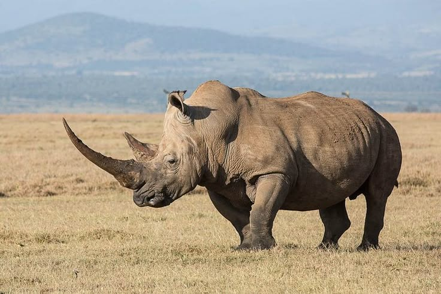
Rinoceronte
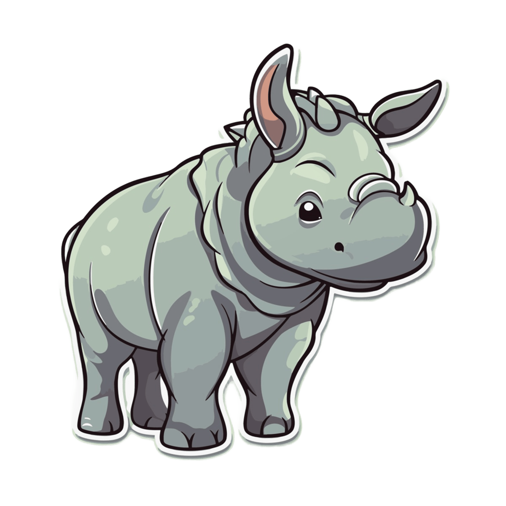
Hábitat: Habita sabanas, praderas, bosques tropicales y zonas pantanosas. Sus zonas principales son el sur y este de África.
Alimentacion: Es herbívoro y su dieta depende de la especie. Algunos comen principalmente pasto, mientras que otros consumen hojas, ramas y frutos.
Es un gran mamífero herbívoro reconocido por uno o dos cuernos en el hocico y por su piel gruesa. Existen varias especies distribuidas en África y Asia. A pesar
de su tamaño, puede correr a gran velocidad y es un animal solitario en la mayor parte de su vida.
Datos curiosos
- Su cuerno está hecho de queratina, la misma sustancia que las uñas humanas.
- Las crías siguen a su madre por varios años.
- A pesar de su tamaño, puede correr hasta 50 km/h.
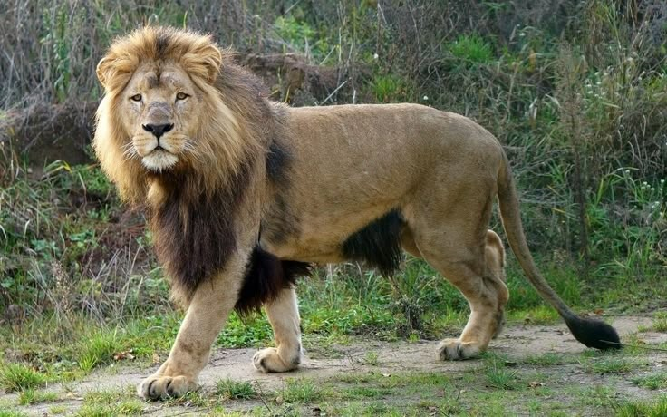
Leon
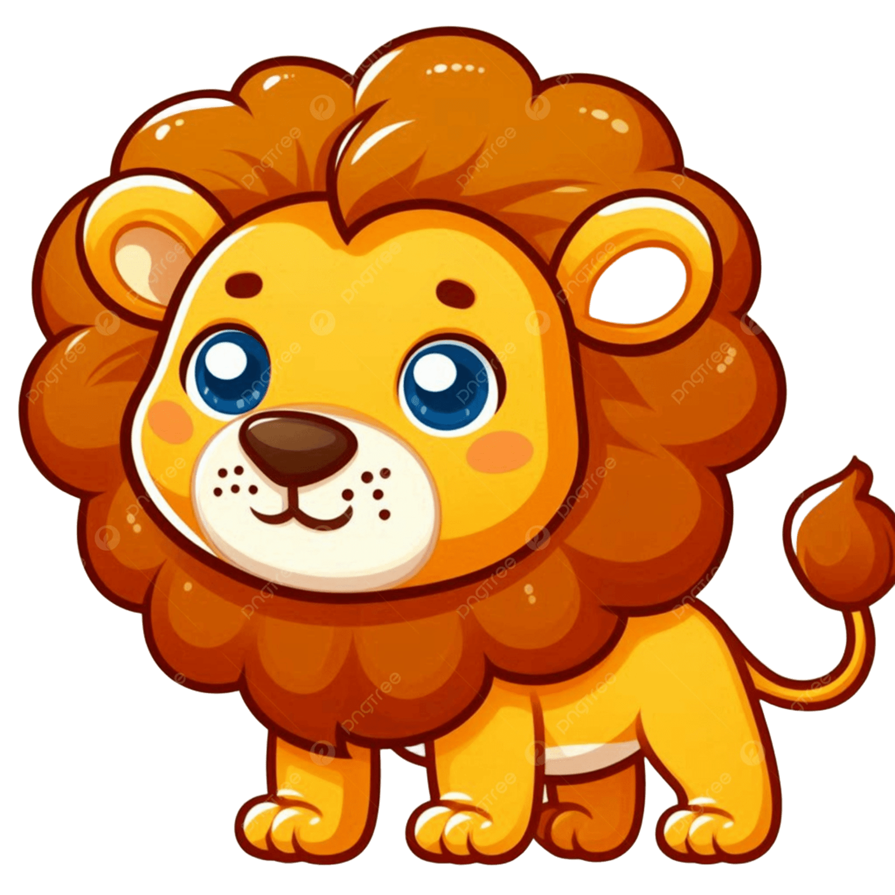
Hábitat: Vive en sabanas, pastizales y zonas semiáridas que ofrecen suficiente espacio para cazar y moverse.
Alimentacion: Se alimenta de grandes herbívoros como cebras, antílopes y búfalos.
El león es un gran felino perteneciente a la especie Panthera leo. Es conocido como “el rey de la selva” debido a su fuerza, presencia y papel dominante en el ecosistema.
e distingue por la melena en los machos y por vivir en grupos sociales llamados manadas, algo poco común entre los grandes felinos
Datos curiosos
- Las hembras suelen hacer la mayor parte de la caza.
- Su melena sirve como protección y también como señal de fuerza.
- El rugido de un león puede escucharse a más de 8 km.
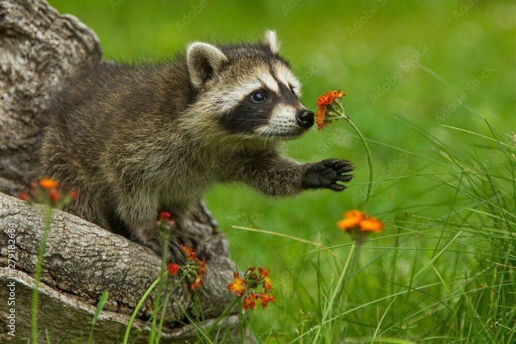
Mapache
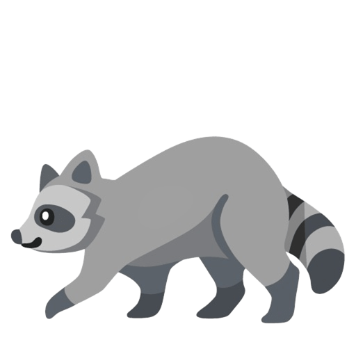
Hábitat: Vive en bosques, selvas, zonas rurales y también en áreas urbanas.
Alimentacion: Come frutas, insectos, pequeños animales, huevos, semillas y restos de comida humana.
El mapache es un mamífero de tamaño mediano originario de América. Se reconoce por su máscara negra alrededor de los ojos y su cola con anillos. Es un animal muy adaptable,
inteligente y conocido por su habilidad para manipular objetos con sus patas delanteras.
Datos curiosos
- Tiene un sentido del tacto muy desarrollado.
- Lava o moja su comida cuando puede, aunque no siempre es necesario.
- Sus huellas se parecen a manos humanas pequeñas.
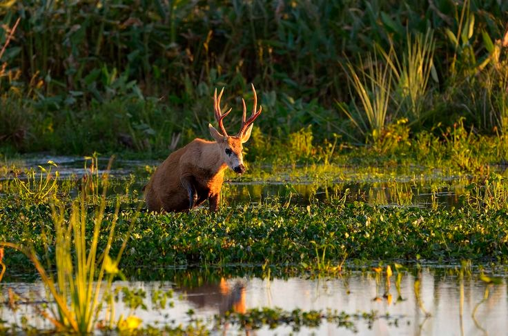
Ciervo
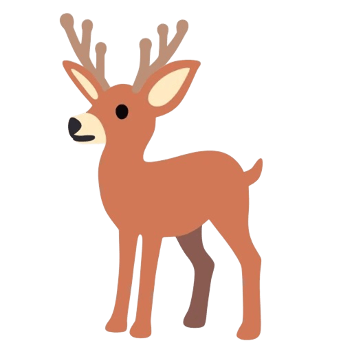
Hábitat: Vive en bosques, praderas, zonas montañosas y regiones templadas.
Alimentacion: Se alimenta de pasto, brotes, hojas, cortezas, frutas y plantas tiernas.
EEl ciervo es un mamífero herbívoro perteneciente a la familia Cervidae. Se caracteriza por sus patas largas, gran agilidad y, en el caso de los machos de muchas especies, la
presencia de astas que se renuevan cada año. Es un animal tímido, rápido y muy atento a su entorno para evitar depredadores.
Datos curiosos
- Sus astas crecen cada año y luego se caen.
- Su cola blanca sirve como señal de alarma para otros ciervos.
- Las crías nacen con manchas para camuflarse mejor.